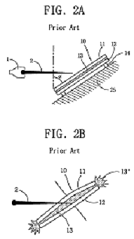

Projektek
Hosszú karrierem során több szigorúan titkos katonai fejlesztésben is részt vettem, ezek közül párat említek itt...

Merkava 4
A 2000-es évek elején ért a megtiszteltetés, hogy akkor még pályakezdő mérnökként a világ legkitűnőbb tervező elméivel együtt
dolgozhattam e csodálatos hadigép fegyverzetének és páncélzatának tesztelésén, tökéletesítésén. Őszintén mondhatom, karriermegalapozó
tapasztalat volt!
Challenger 2
A tizes évek közepéig volt szerencsém több alkalommal is hosszabb időt tölteni a híres-neves Chobham-i brit harckocsifejlesztő központban.
Itt többek között a Challenger 2 védelmét fejlesztettem különböző szituációkban effektív úgynevezett Explosive Reactive Armour típusok tervezésével.
M1A3 Abrams
Az utóbbi években a US ARMY talán eddig legbeváltabb MBT (Main Battle Tank) szériájának fejlesztésén dolgoztam. Bár sokaknak először
erről a tankról -nem véletlenül- a gázturbina hajtás jut eszébe, az én kezem azonban a töltényrekesz még biztonságosabbá tételénben van benne.
Akinek beindították a fantáziáját a tankok, annak ajánlom figyelmébe jövő év elején megjelenő könyvemet, amiben a számtalan izgalmas történet
mellett technológiai jellegű érdekességeket is bemutatok, melyekkel eddigi munkám során találkoztam.
Lap tetjére